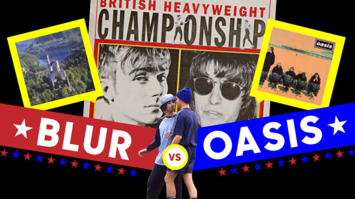

Si de rivalidades entre bandas británicas se trata sabemos que la que existió entre The Beatles y The Rolling Stones fue de la más polémica y persistente en los años. Pero más adelante en la historia de la música del Reino Unido surgió la rivalidad entre Blur y Oasis, las dos bandas más representativas del britpop. La batalla librada entre las dos bandas icono de los 90 tuvo su origen en la rivalidad entre los músicos, diferente a la de Beatles y Stones que fue un enfrentamiento más bien librado por el público. El momento clave de la batalla entre Blur y Oasis se da en 1995, año en que ambos publicaron dos importantes singles en el comienzo de sus carreras. En ese momento los rankings de ventas lo eran todo para las bandas. El 14 de agosto de 1995 Blur sacó "Country House" y la banda de Mánchester "Roll With It". Quién resultaría ganador en la batalla de ventas era una cuestión que se volvió mediática y que incluso acaparó a los noticieros televisivos. Finalmente fue la banda liderada por Damon Albarn la que ganó en ventas, con 274.000 copias contra las 216.000 vendidas por Oasis.Detrás de esta rivalidad se ponen en juego varias cuestiones que sí son inherentes a las bandas. Por un lado los orígenes: Oasis provenía de Manchester, representando en algún punto a la clase trabajadora, lo cual también daba cierto carácter a su música; mientras Blur venían del sur y en representación de una clase media. Las dos bandas se volvieron emblemas del britpop, que marcó los 90 con el auge de MTV y del formato CD. Aún así, entre las dos bandas se perciben muchas diferencias musicales. Más allá de estar en la misma línea, Blur tiene una inclinación más alternativa y Oasis refuerza su costado más melódico. Lo cierto es que la rivalidad entre Oasis y Blur sobrepasaba una cuestión profesional, para ser una lucha de egos e insultos y chicanas entre las bandas. Como la del bajista de Blur, Alex James, cuando vistió una remera de Oasis para tocar, o la de Gallagher diciendo que los Blur "no tenían los huevos" para la competencia. Años después, el propio Noel Gallagher habló de la disputa y dijo que en realidad, ninguno de los dos sencillos, aquellos que en 1995 representaron la batalla musical, eran demasiado buenos y que no representaban buenos materiales de ninguna de las dos bandas. Finalmente, juzgó toda la rivalidad como completamente innecesaria.
